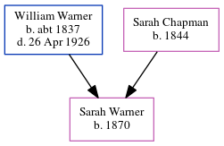

Henry John Warner 1873 - c1956
[ Home ] | [ Calendar ] | [ Surnames Index ] | [ Errors ] | [ Family History ]A domestic under gardener and the child of William Warner (a builder's labourer) and Sarah Chapman, Henry Warner, the first cousin three-times-removed on the father's side of Nigel Horne, was born in St Peters, Thanet, Kent, England on 3 Sept 18731,2,3,4, was baptised there on 5 Oct 1873 and married Ada Ashfield (with whom he had 1 child, Elsie Ada) in Abingdon, Berkshire, England on 23 Apr 19055.
During his life, he was living at Burtons Cottages, St Peters, Thanet, Kent, England on 3 Apr 18817; at Magdala Road, St Peters in Thanet on 5 Apr 18918 - less than a mile from his aunt Elizabeth Warner who was living at 194 Reading Street, St Peters in Thanet; at Rumfields, St Peters in Thanet on 31 Mar 19011 - less than a mile from his aunt Elizabeth Warner who was living at 1 Welbeck Terrace, Reading Street, St Peters in Thanet and his cousin on his father's side Emily Horne and cousin on his father's side Isaac Horne who were living at 1 Welbeck Terrace, Reading Street, St Peters in Thanet -; at Gardeners Lodge, Hillside, Fitzroy Park, Highgate, London, England on 2 Apr 19116 and on 19 Jun 19219; and at 58 Valley Road, Beckenham, Kent on 29 Sept 19392.
He died c. Nov 1956 in Eton, Buckinghamshire, England3.
Parents
- William Robert was born c. 1837
- Sarah was born in 1844
Children
- Elsie Ada was born on 21 Jun 1907
Citations
- 1901 England, Wales & Scotland Census - Findmypast (was age 27 and the son of the head of the household)
- 1939 Register - Findmypast (was recorded at this address)
- England & Wales deaths 1837-2007 - Findmypast
- Kent, Canterbury Archdeaconry baptisms 1538-1912 - Findmypast
- England & Wales marriages 1837-2008 - Findmypast
- 1911 Census for England & Wales - Findmypast (was age 37 and the head of the household)
- 1881 England, Wales & Scotland Census - Findmypast (was age 7 and the son of the head of the household)
- 1891 England, Wales & Scotland Census - Findmypast (was age 17 and the son of the head of the household)
- 1921 Census Of England & Wales - Findmypast (was age 49 and the head of the household)
Media
Kent, Canterbury Archdeaconry baptisms 1538-1912 - GBPRS/CANT/B/96351688
England & Wales births 1837-2006 - BMD/B/1873/3/AZ/000550/352
England & Wales marriages 1837-2008 - BMD/M/1903/4/AZ/000407/160
1939 Register - TNA/R39/1214/1214H/009/08
1881 England, Wales & Scotland Census - GBC/1881/0004870504
1891 England, Wales & Scotland Census - GBC/1891/0005914442
England & Wales Deaths 1837-2007 - BMD-D-1956-4-AZ-001118-127
1921 Census of England & Wales - GBC/1921/RG15/00806/0481/01
Family Tree
Map
Generated by ged2site. Last updated on Jul 3, 2024